정보통신산업기사 (2009-03-01 기출문제)
1과목: 디지털전자회로
1. 다음 중 정류회로의 구성 요소와 거리가 먼 것은?
- 전원 변압기
- 평활 회로
- 안정화 회로
- 궤환 회로
(정답률: 83%)

2. 이미터 접지일 때 전류증폭율이 각각 hFE1. hFE2 인 두개의 트랜지스터 Q1과 Q2를 그림과 같이 접속하였을 때의 컬렉터 전류 IC 는?
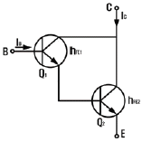
- IC = hFE1ㆍhFE2ㆍIB
- IC = (hFE1 / hFE2)ㆍIB
- IC = hFE2(hFE2+1)IB
- IC = hFE1ㆍIB + hFE2(hFE2+1)ㆍIB
(정답률: 63%)
3. 다음은 리플 카운터(ripple counter)이다. 초기 상태 A=0, B=0, C=0 이었다면 클럭 펄스가 12개 인가된 후의 상태는?
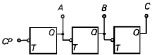
- A=0, B=0, C=1
- A=0, B=1, C=1
- A=1, B=1, C=0
- A=1, B=0, C=0
(정답률: 47%)
4. 다음 회로의 설명 중 틀린 것은?
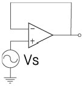
- voltage follower 이다.
- 입력과 출력은 역상이다.
- 입력 전압과 출력 전압은 크기가 같다.
- 입력 임피던스가 매우 크다.
(정답률: 59%)
5. 다음과 같은 RC 필터회로에서 리플 함유율을 줄이려면 어느 방법이 옳은가?
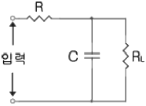
- R, C 를 작게 한다.
- RL, C 를 작게 한다.
- R, C 를 크게 한다.
- RL, C 를 크게 한다.
(정답률: 80%)
6. 다음과 같은 회로가 수행할 수 있는 논리 동작은? (단, 부논리이며 A, B는 입력단자이다.)
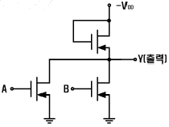
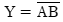
- Y+AB
- Y=A+B
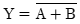
(정답률: 80%)
7. 다음 중 트랜지스터 회로의 바이어스 안정도(S)가 가장 좋은 것은?
- S = 1
- S = π
- S = 50
- S = ∞
(정답률: 84%)
8. 하틀레이(Hartley) 발진기에서 궤환(feed back) 요소는?
- 콘덴서
- 코일
- 트랜스
- 저항
(정답률: 62%)
9. 그림과 같은 회로에서 스위치가 2인 위치에서 t =0 일 때 1인 위치로 옮겨지는 경우에 회로에 흐르는 전류 I를 나타낸 것은?
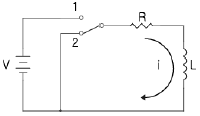
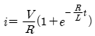
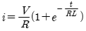
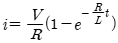
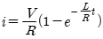
(정답률: 24%)
10. 그림과 같은 clipping 회로에 정현파 전압을 가하면 출력 파형은?
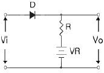
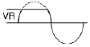
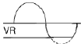
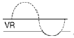
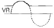
(정답률: 79%)
11. RC결합 증폭회로의 이득이 높은 주파수에서 감소되는 이유는?
- 증폭 소자의 특성이 변하기 때문에
- 부성 저항이 생기기 때문에
- 결합 커패시턴스 때문에
- 출력회로의 병렬 커패시턴스 때문에
(정답률: 38%)
12. 다음 논리회로의 출력 C를 진리표 내에서 바르게 나타낸 것은?
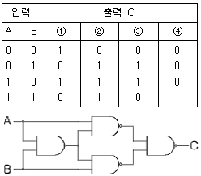
- ①
- ②
- ③
- ④
(정답률: 74%)
13. 다음 카르노 맵을 간략화한 결과는?
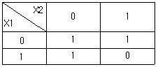
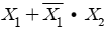
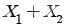
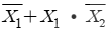
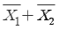
(정답률: 64%)
14. 다음 중 동기식 카운터(synchronous counter)의 설명으로 옳지 않은 것은?
- 비동기식보다 최종 플립플롭의 변화 지연시간을 단축시킬 수있다.
- 입력펄스가 플립플롭의 모든 클록에 동시에 가해지는 구조이다.
- 저속의 카운터가 되지만 플립플롭의 회로가 간단하다.
- 모든 플립플롭이 동시에 동작한다.
(정답률: 64%)
15. 다음 논리식은 무슨 법칙을 활용하여 전개한 것인가?
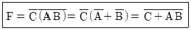
- 보수와 병렬의 법칙
- 드모르간(De Morgan)의 법칙
- 교차와 병렬의 법칙
- 적과 화의 분배의 법칙
(정답률: 89%)
16. 그림의 수정진동자 등가회로에서 병렬공진주파수(fp)는?
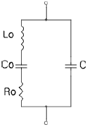
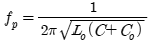
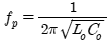
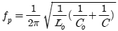
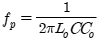
(정답률: 39%)
17. 다음 중 주로 고주파 증폭기에 사용되는 것은?
- A급
- B급
- C급
- AB급
(정답률: 79%)
18. 그림(a)의 회로망에 그림(b)의 입력파를 인가시 출력파형으로 옳은 것은?
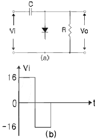
- 0[V]와 +16[V]에 클램프 된다.
- 0[V]와 -16[V]에 클램프 된다.
- 0[V]와 +32[V]에 클램프 된다.
- 0[V]와 -32[V]에 클램프 된다.
(정답률: 63%)
19. 다음 중 부궤환에 의해서 얻을 수 있는 효과가 아닌 것은?
- 외부 변화에 덜 민감하므로 이득의 감도를 줄일 수 있다.
- 비선형 왜곡을 줄일 수 있다.
- 불필요한 전기 신호에 의한 영향을 줄일 수 있다.
- 궤환없는 증폭기에 비해 대역폭이 감소한다.
(정답률: 62%)
20. 다음 중 펄스파가 상승해 가는 기간의 10[%]에서 90[%]까지 걸리는 시간을 무엇이라 하는가?
- 지연시간
- 하강시간
- 축적시간
- 상승시간
(정답률: 86%)
2과목: 정보통신기기
21. 디지털 다중화(Digital Multiplex)에서 T1 신호에 대한 설명으로 옳은 것은?
- 24개의 채널이 다중화되어 1.544[Mbps]의 전송속도를 갖는 다.
- 32개으 채널이 다중화되어 1.544[Mbps]의 전송속도를 갖는 다.
- 24개의 채널이 다중화되어 2.048[Mbps]의 전송속도를 갖는 다.
- 32개의 채널이 다중화되어 2.048[Mbps]의 전송속도를 갖는 다.
(정답률: 77%)
22. 다음 중 비디오텍스에 대한 설명으로 옳은 것은?
- 텔레비전과 전화의 연결에 의한 정보서비스
- 방송형태의 정보를 제공하는 서비스
- 문자다중방송 서비스
- TV 귀선 시간을 이용해서 정보전송을 하는 서비스
(정답률: 67%)
23. 다음 중 다중화 방식에서 채널 활용도가 가장 높은 것은?
- CDMA
- TDMA
- FDMAA
- CSMA
(정답률: 91%)
24. 종이에 기록된 문자를 직접 광학적으로 읽어내는 광학식 문자 입력장치는?
- 디지타이저
- OCR
- CAD/CAM
- 그래픽 단말기
(정답률: 85%)
25. 시분할 다중화(TDM)에서 부채널간 상호간섭을 방지하기 위한 완충 지역은?
- Guard time
- Guard band
- Channel
- Sub-group
(정답률: 65%)
26. 다음 중 WiBro 시스템에서 사용되는 다중접속방식은?
- OTDMA
- OFDMA
- CDMA
- WCDMA
(정답률: 83%)
27. 다음 중 CATV의 매체 특성이 아닌 것은?
- 다수인에 대한 동시 관찰
- 원거리의 일정한 감시 기능
- 가시적인 영역만의 관찰
- 집중적인 감시 기능
(정답률: 82%)
28. 다음 중 정보통신 시스템의 데이터 전송계에 해당되지 않는 것은?
- 데이터 단말장치
- 신호 변화장치
- 통신 회선
- 입ㆍ출력 채널
(정답률: 53%)
29. 지구관측위성의 회전궤도이며, 지구의 여러 곳의 상태를 관찰할 수 있는 궤도는?
- 극 궤도
- 적도면 궤도
- 타원 궤도
- 태양동기 궤도
(정답률: 84%)
30. 다음 중 G3 팩시밀리의 특징이 아닌 것은?
- 부호화 방식은 MH, MR 방식이다.
- ITU-T의 권고안으로 T.30 이 있다.
- ISDN용 디지털 전용선로에서 사용한다.
- A4 원고를 약 1분 이내에 전송이 가능하다.
(정답률: 67%)
31. 위성통신의 회선접속 방식 중 고정할당방식 또는 요구할당방식의 운용이 가능하고, 간섭 및 방해에 강하지만 넓은 대역폭이 소요되어 주파수의 이용효율이 비교적 낮은 것은?
- FDMA
- TDMA
- CDMA
- SDMA
(정답률: 58%)
32. 다음 중 위성통신용 지구국의 기본구성이 아닌 것은?
- 안테나부
- 송신부
- 수신부
- 자세제어부
(정답률: 100%)
33. 다음 중 통신제어장치의 기능이 아닌 것은?
- 에러검출
- 회선감시
- 전송제어
- 신호변환
(정답률: 45%)
34. FAX의 기본 과정에서 공간적으로 2차원으로 분포한 원화정보를 1차원적인 신호로 변환하는 것을 송신주사라고 한다. 송신주사 방식 중 기계적 주사방식이 아닌 것은?
- 원통주사
- 원호면주사
- 평면주사
- 고체주사
(정답률: 77%)
35. 다음 중 전전자 교환기의 구성에서 통화로계에 속하지 않는 것은?
- 가입자선 정합부
- 통화로망
- 주변제어장치
- 중계선 정합부
(정답률: 75%)
36. 다음 중 다중화 장비의 이용 목적으로 가장 적합한 것은?
- 다중화 장비의 비용 절약
- 통신선로와 모뎀의 비용 절약
- 단말기와 모뎀의 비용 절약
- 통신선로와 단말기의 비용 절약
(정답률: 48%)
37. MFC(Multi Frequency Code) 방식을 이용하는 푸시 버튼 전화기의 특징이 아닌 것은?
- 전자교환기에서 사용될 수 있다.
- 특수 서비스를 받을 수 있다.
- 직류전류를 단속시켜 교환기를 동작시킨다.
- 복합 주파수를 선정한다.
(정답률: 63%)
38. SSB 변조방식이 DSB 변조방식에 비해 장점이 아닌 것은?
- 주파수 효율이 높다.
- 선택성 페이딩의 영향을 덜 받는다.
- 비화성이 없다.
- 소비전력이 적다.
(정답률: 57%)
39. 다음 중 전자파의 성질이 아닌 것은?
- 전자파는 종파이다.
- 직진, 반사, 회절, 간섭 등의 현상이 있다.
- 서로 다른 매질의 경계면에서 굴절한다.
- 전파속도는 투자율이나 유전율이 클수록 늦어진다.
(정답률: 79%)
40. 다음 중 EIA에서 정의한 25핀 RS-232C의 핀 번호와 기능이 틀린 것은?
- Pin 1(FG) : 보호용 접지
- Pin 2(TXD) : 데이터의 송신
- Pin 3(RXD) : 데이터의 수신
- Pin 5(RTS) : 출력 송신요구
(정답률: 73%)
3과목: 정보전송개론
41. 다음 중 콘볼루션(convolution) 부호에 해당하지 않는 것은?
- 위너부호
- 허프만부호
- 비터비부호
- 자기직교부호
(정답률: 88%)
42. 스트로브(strobe)신호와 비지(busy)신호를 이용하여 전송하는 형태는?
- 병렬 전송
- 직렬 전송
- 동기식 전송
- 비동기식 전송
(정답률: 62%)
43. 다음 중 디지털 신호 재생 중계기의 기본 기능이 아닌 것은?
- Reshaping
- Regeneration
- Retiming
- Recovery
(정답률: 77%)
44. 다음 중 광섬유의 분산에 대한 설명으로 적합하지 않은 것은?
- 색분산에는 재료분산과 구조분산이 있다.
- 광섬유 분산 특성에는 색분산과 형태분산이 있다.
- 일반적인 광섬유에서 0 분산은 1310nm 파장대에 존재한다.
- 멀티모드 광섬유에서는 색분산이 문제가 되고 싱글모드 광섬유에서는 모드분산이 문제가 된다.
(정답률: 65%)
45. 전송하고자 하는 총 비트 수가 30개 일 때 해밍 비트수는?
- 3비트
- 4비트
- 5비트
- 7비트
(정답률: 69%)
46. 인접한 다른 선로와 전자기적 유도에 의해 발생하는 잡음은?
- 열잡음
- 신호감쇠
- 누화잡음
- 지연왜곡
(정답률: 70%)
47. OSI 7 계층 중 데이터 링크계층에서 사용되는 데이터 단위는?
- 비트(bit)
- 프레임(frame)
- 패킷(packet)
- 메시지(message)
(정답률: 89%)
48. 다음 중 FEC(전진에러정정) 방식을 적용할 수 있는 분야로 적합하지 않은 것은?
- 데이터가 연속적으로 전송되는 경우
- 서로 다른 비트 에러율을 요구하는 다수의 이용자를 수용하는 공중 반송 채널의 경우
- 4800[bps] 이상의 속도로 운용되는 시분할 다중화기 사이에서 전이중방식으로 운용되는 경우
- 역채널이 있는 경우
(정답률: 54%)
49. 디지털 신호 0 또는 1에 따라 반송파의 위상을 변화시키는 변조방식은?
- PCM
- 2진 PSK
- 2진 FSK
- 2진 ASK
(정답률: 93%)
50. 다음 중 UTP(Unshielded Twisted Pair) 케이블에 대한 설명으로 적합하지 않은 것은?
- 유연하여 설치가 쉽다.
- 다른 매체에 비하여 가격이 싸다.
- 전송속도에 따라 일반적으로 6등급으로 분류한다.
- Cat. 5 기준으로 전송속도 10 ~ 100[Mbps]에서 최대 전송 거리는 약 1000[m]이다.
(정답률: 83%)
51. 다음 중 동기식 전송방식의 특징에 대한 설명으로 적합하지 않은 것은?
- 저속의 전송속도에 주로 사용한다.
- 글자들 사이에는 휴지시간이 없다.
- 터미널에는 버퍼를 가지고 있어야 한다.
- 데이터 블록의 앞쪽에 반드시 동기문자(신호)가 온다.
(정답률: 62%)
52. 다음 중 스펙트럼 이용효율이 가장 좋은 변조방식은?
- 2진 FSK
- 2진 ASK
- 4진 PSK
- 16진 QAM
(정답률: 95%)
53. 단말기와 교환기, 교환기와 교환기 상호간에 통화회선의 설정, 유지, 관리, 복구 등을 위해 필요한 정보를 주고 받는 절차 및 기준을 무엇이라 하는가?
- 트래픽
- 호 제어
- 신호방식
- 전송제어
(정답률: 48%)
54. 이동 통신에서 여러 가지 전송 경로를 통해 수신되는 신호들의 합과 차에 의하여 수신 신호 레벨의 변동이 발생하는 것과 가장 관련이 깊은 것은?
- 페이딩
- 채널간섭
- 지역 확산
- 도플러 현상
(정답률: 77%)
55. 다음 중 HDLC의 프레임을 구성하는 주요 요소에 속하지 않는 것은?
- 플래그
- 주소 영역
- 동기체크 영역
- 정보 영역
(정답률: 63%)
56. 전송효율을 최대로 하기 위해서 프레임의 길이를 동적으로 변경시킬 수 있는 ARQ 방식은?
- 정지-대기 ARQ
- Go-back-N ARQ
- Selective-repeat ARQ
- Adaptive ARQ
(정답률: 60%)
57. 다음 중 위성통신에 대한 설명으로 적합하지 않은 것은?
- 위성통신에 사용하는 주파수 대역은 일반적으로 SHF대역(3~30[GHz]) 이다.
- 상향회선과 하향회선은 서로 다른 주파수를 사용한다.
- 3개의 정지궤도위성을 이용하면 극지방을 제외한 전세계 통신망을 커버할 수 있다.
- 랜덤위성이나 저궤도위성을 이용하면 정지궤도위성을 이용할 때보다 전파손실이 크다.
(정답률: 80%)
58. 다음 중 전송로의 진폭왜곡이나 위상왜곡에 의해 발생하는 부호간 간섭(ISI)의 영향을 감소시키는 장치는?
- 증폭기
- 등화기
- 정합필터
- 재생중계기
(정답률: 75%)
59. 8비트 코드(데이터)에 1개의 시작 비트와 2개의 정지 비트를 추가하여 전송하면 전송 효율은 약 몇 [%] 인가?
- 62.5[%]
- 65.7[%]
- 72.7[%]
- 82.5[%]
(정답률: 44%)
60. 기저대역 전송에서 전송부호가 가져야 하는 조건으로 적합하지 않은 것은?
- DC 성분이 포함되어야 한다.
- 전송 대역폭이 압축되어야 한다.
- 전송 부호의 코딩 효율이 양호해야 한다.
- 전송 도중에 발생하는 에러의 검출과 교정이 가능해야 한다.
(정답률: 87%)
4과목: 전자계산기일반 및 정보설비기준
61. 다음 중 CPU에 인터럽트가 발생할 때의 OS 동작 설명으로 옳지 않은 것은?
- 수행중인 프로세스나 스레드의 상태를 저장한다.
- 인터럽트 종류를 식별한다.
- 인터럽트 서비스 루틴을 호출한다.
- 인터럽트 처리 결과를 텍스트 형식의 파일로 저장한다.
(정답률: 64%)
62. 다음 중 n개의 비트로 표시할 수 있는 데이터의 수는?
- n개
- n2개
- 2n개
- 2n-1개
(정답률: 56%)
63. 다음 중 소프트웨어 수명을 연장시키는 목표와 가장 거리가 먼 것은?
- 정확성
- 유지 보수의 용이성
- 재사용성
- 유연성
(정답률: 43%)
64. 다음 중 1비트 기억 장치는?
- 플립플롭
- 레지스터
- 누산기
- 디코더
(정답률: 48%)
65. 다음 레지스터들 중에서 Read 하거나 Write 할 때 반드시 거쳐야 하는 레지스터는?
- MAR(Memory Address Register)
- MBR(Memory Buffer Register)
- PC(Program Counter)
- IR(Instruction Register)
(정답률: 43%)
66. 다음 중 원시 프로그램을 목적 프로그램으로 바꾸어 주는 것은?
- 어셈블리언어
- 프로그램라이브러리
- 연계편집프로그램
- 어셈블러
(정답률: 59%)
67. 다음 그림과 같은 트리를 후위 순회(postorder-traversal)한 결과는?
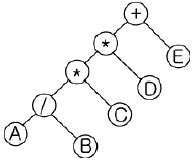
- +**/ABCDE
- AB/C*D*E+
- A*B+C*D/E
- A*B+CD*/E
(정답률: 67%)
68. 프로그램카운터의 기능에 대한 설명으로 옳은 것은?
- 다음에 수행할 명령어의 주소를 기억하고 있음
- 데이터가 기억된 위치를 지시함
- 기억하거나 읽은 데이터를 보관함
- 수행중인 명령을 기억함
(정답률: 72%)
69. 다음은 10진수를 표현하는 이진 코드(binary code)들이다. 이들 중 자체 보수화(self-complementary)가 불가능한 코드는?
- 51111 코드
- BCD 코드
- Excess-3 코드
- 2421 코드
(정답률: 53%)
70. Binary Code 11010을 Gray Code로 변환한 값은?
- 11011
- 10111
- 11101
- 11110
(정답률: 67%)
71. 재직 중에 통신에 관하여 알게 된 타인의 비밀을 누설한자에 대한 벌칙으로 적합한 것은?
- 1년 이하의 징역 또는 1천마원 이하의 벌금
- 2년 이하의 징역 또는 5천만원 이하의 벌금
- 3년 이하의 징역 또는 1억원 이하의 벌금
- 5년 이하의 징역 또는 2억원 이하의 벌금
(정답률: 47%)
72. 다음 ( ) 안에 들어갈 내용으로 가장 적합한 것은?
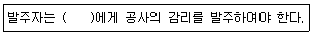
- 공사업자
- 감리업자
- 용역업자
- 도금업자
(정답률: 72%)
73. 다음 중 기간통신 역무의 종류에 속하지 않는 것은?
- 전송 역무
- 기간통신망 설치 역무
- 전기통신회선설비임대 역무
- 주파수를 할당받아 제공하는 역무
(정답률: 20%)
74. 다음 중 감리원의 업무범위에 속하지 않는 것은?
- 공사계획 및 공정표의 검토
- 하수급에 대한 타당성 검토
- 설계변경에 관한 사항의 검토 확인
- 공사진척부분에 대한 조사 및 검사
(정답률: 50%)
75. 정보통신공사업의 등록기준에서 개인의 경우 자본금은 얼마 이상인가?
- 5억만원 이상
- 1억원 이상
- 1억5천만원 이상
- 2억원 이상
(정답률: 57%)
76. 사업자의 교환설비로부터 이용자전기통신설비의 최초 단자에 이르기까지의 사이에 구성되는 회선을 말하는 것은?
- 내선
- 국선
- 통신선
- 중계선
(정답률: 78%)
77. 전기통신망에 접속되는 단말기기 및 그 부속 설비를 무엇이라 하는가?
- 전원설비
- 단말장치
- 국선장치
- 정보통신설비
(정답률: 75%)
78. 다음 중 기간통신사업을 경영하고자 하는 경우의 절차로 가장 적합한 것은?(관련 규정 개정전 문제로 여기서는 기존 정답인 3번을 누르면 정답 처리됩니다. 자세한 내용은 해설을 참고하세요.)
- 방송통신위원회에 등록하여야 한다.
- 방송통신위원회에 신고하여야 한다.
- 방송통신위원회의 허가를 받아야 한다.
- 지식경제부장관에게 허가를 받아야 한다.
(정답률: 80%)
79. 전기통신기본법의 목적을 달성하기 위하여 전기통신에 관한 기본적이고 종합적인 정부의 시책을 강구하여야 하는 자(기구)는?(관련 규정 개정전 문제로 여기서는 기존 정답인 2번을 누르면 정답 처리됩니다. 자세한 내용은 해설을 참고하세요.)
- 국무총리
- 방송통신위원회
- 지식경제부장관
- 교육과학기술부장관
(정답률: 74%)
80. 다음 ( ) 안에 들어갈 내용으로 가장 적합한 것은?
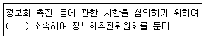
- 국무총리
- 방송통신위원회
- 지식경제부장관
- 교육과학기술부장관
(정답률: 31%)